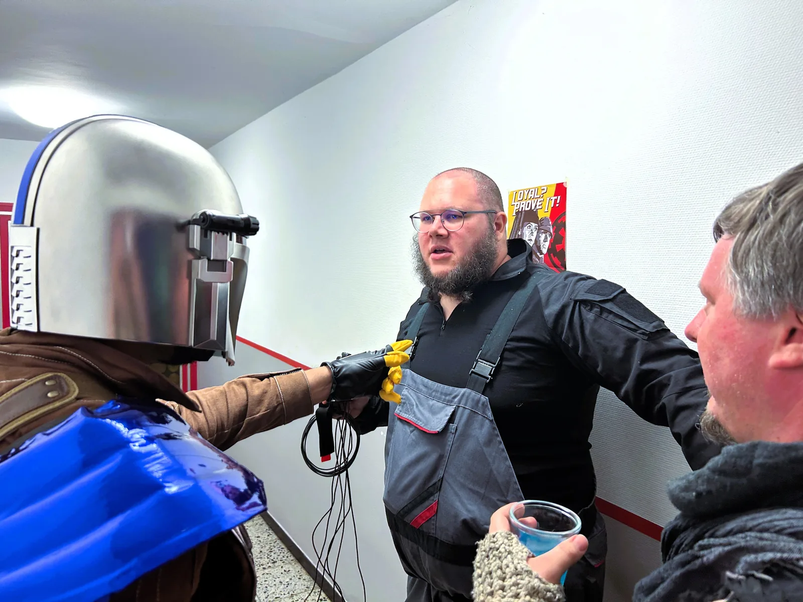

Datum
✦ Willkommen an BordEine Überfahrt mit den Black Mynocks
Na, Reisender? Ich sehe, du hast vor, dich ins Kokosta-System zu verirren. Mutig, mutig! Klingt nach Ärger, wenn du mich fragst. Aber hey, wo Ärger ist, sind meistens auch Credits zu holen.
Du brauchst also eine Mitfahrgelegenheit? Da hast du Glück!
Die Queen of the Void der Black Mynocks begleitet euch durch unsere Blockade. Auf der Überfahrt steht dir unsere Cantina offen. Hier kannst du ein paar Drinks genießen, neue Bekanntschaften machen und das ein oder andere Geschäft abschließen. Und keine Sorge, wir sind da nicht wählerisch. Ob Imperialer, Rebell, Kopfgeldjäger oder jemand, der lieber nicht verraten möchte, woher seine Credits stammen – solange du keinen Ärger machst, bist du bei uns willkommen.
Du hast Waren, die einen Käufer suchen? Informationen, die ein paar Credits wert sind? Oder brauchst du vielleicht jemanden, der auf Kokosta ein kleines Problem für dich löst? Dann ist unsere Cantina genau der richtige Ort, um die passenden Bekanntschaften zu machen.
Und falls du einfach nur deine Ruhe haben willst, ist das natürlich auch in Ordnung.
Also steig ein, schnapp dir einen Drink und mach es dir gemütlich.
Die Black Mynocks wünschen eine angenehme Überfahrt!
